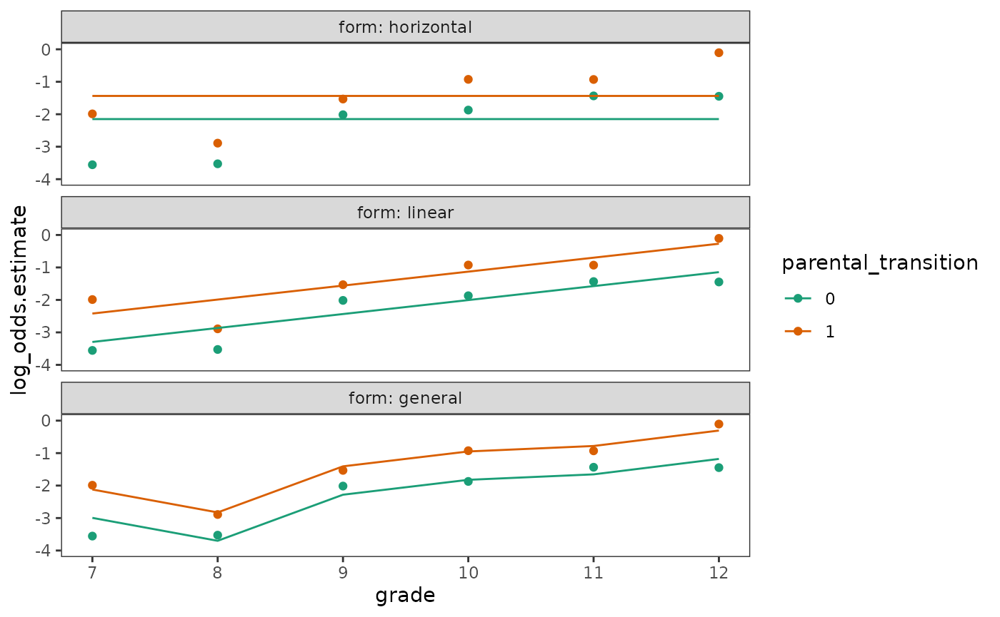
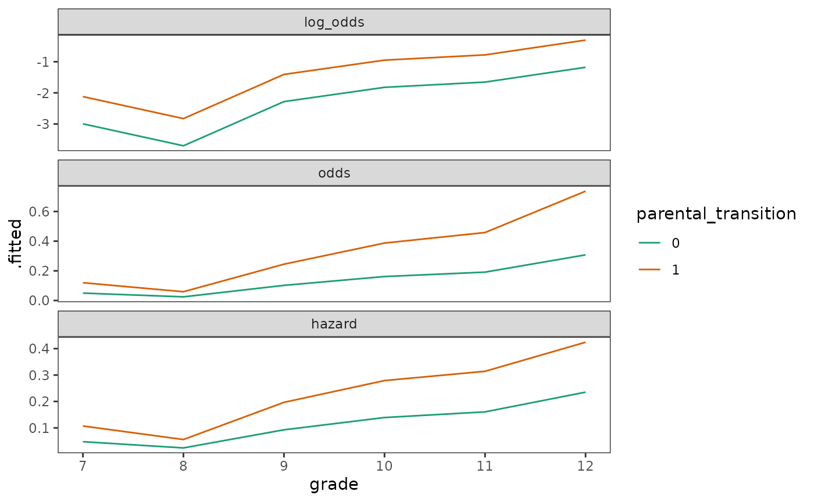
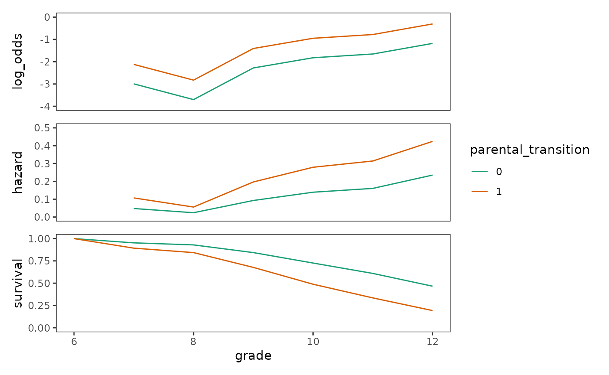
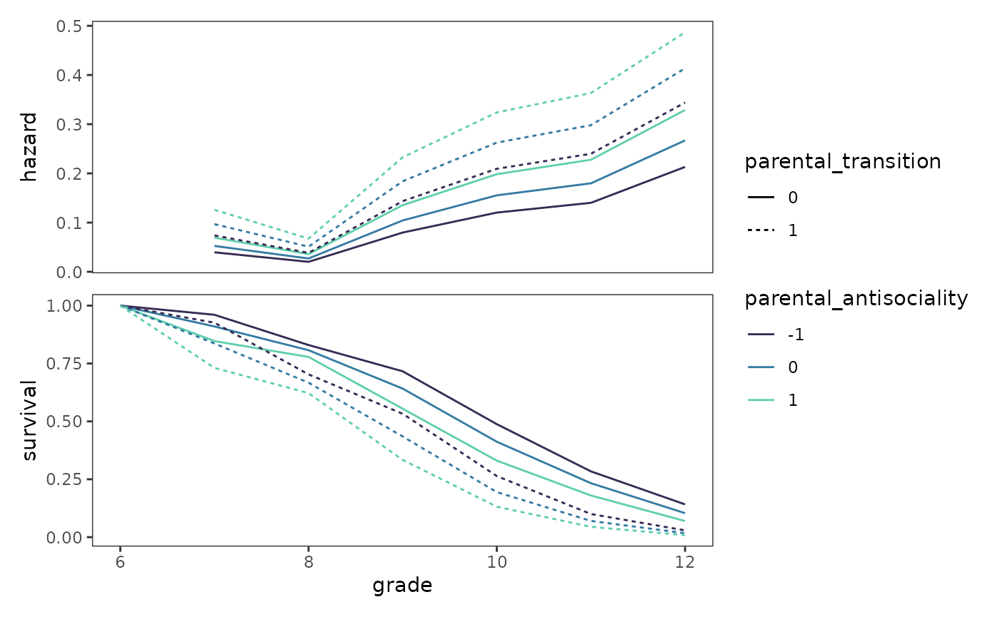

Chapter 11: Fitting basic discrete-time hazard models
Source:vignettes/articles/chapter-11.Rmd
chapter-11.Rmd
library(alda)
library(dplyr)
library(tidyr)
library(purrr)
library(stringr)
library(ggplot2)
library(patchwork)
library(survival)
library(broom)
library(modelsummary)
library(gt)11.1 Toward a statistical model for discrete-time hazard
In Chapter 11 Singer and Willett (2003) develop and explain the discrete-time hazard model using a subset of data from Capaldi, Crosby, and Stoolmiller (1996), who measured the grade year of first sexual intercourse in a sample of 180 at-risk heterosexual adolescent males. Adolescent males were followed from Grade 7 up to Grade 12 or until they reported having had sexual intercourse for the first time.
For this example we return to the first_sex data set
introduced in Chapter 10, a person-level data frame with 180 rows and 5
columns:
-
id: Participant ID. -
grade: Grade year of first sexual intercourse. -
censor: Censoring status. -
parental_transition: Binary indicator for whether the adolescent experienced a parental transition (where their parents separated or repartnered). -
parental_antisociality: Composite score across four indicators measuring parents’ level of antisocial behaviour during the child’s formative years.
first_sex
#> # A tibble: 180 × 5
#> id grade censor parental_transition parental_antisociality
#> <fct> <dbl> <dbl> <dbl> <dbl>
#> 1 1 9 0 0 1.98
#> 2 2 12 1 1 -0.545
#> 3 3 12 1 0 -1.40
#> 4 5 12 0 1 0.974
#> 5 6 11 0 0 -0.636
#> 6 7 9 0 1 -0.243
#> 7 9 12 1 0 -0.869
#> 8 10 11 0 0 0.454
#> 9 11 12 1 1 0.802
#> 10 12 11 0 1 -0.746
#> # ℹ 170 more rowsTo inform specification of the discrete-time hazard model we will fit
in subsequent sections, we begin with some basic exploration and
description of the first_sex data using the life table
methods introduced in Chapter 9.
Plots of within-group hazard functions and survival functions
Here we will construct the life table “by hand”, thus, we first need
to convert the person-level first_sex data set to a
person-period data set.
first_sex_pp <- first_sex |>
rename(grades = grade) |>
group_by(id) |>
reframe(
grade = 7:max(grades),
event = if_else(grade == grades & censor == 0, 1, 0),
parental_transition,
parental_antisociality
)
first_sex_pp
#> # A tibble: 822 × 5
#> id grade event parental_transition parental_antisociality
#> <fct> <int> <dbl> <dbl> <dbl>
#> 1 1 7 0 0 1.98
#> 2 1 8 0 0 1.98
#> 3 1 9 1 0 1.98
#> 4 2 7 0 1 -0.545
#> 5 2 8 0 1 -0.545
#> 6 2 9 0 1 -0.545
#> 7 2 10 0 1 -0.545
#> 8 2 11 0 1 -0.545
#> 9 2 12 0 1 -0.545
#> 10 3 7 0 0 -1.40
#> # ℹ 812 more rowsAs Singer and Willett (2003) discuss, our focus for this example
centres on modelling the relationship between hazard and the
time-invariant parental_transition predictor. Therefore, we
will create two life tables using the first_sex_pp data:
one summarizing the overall distribution of event occurrence, and
another summarizing distribution of event occurrence stratified by
values of parental_transition.
Note that when estimating the survival probabilities using the “by
hand” approach, we do so after the call to the summarise()
function because estimates of the survivor probabilities are given by
the cumulative product of the complement of the estimated
hazard probabilities across the current and all previous
intervals—which we cannot compute correctly while the data frame is
grouped by time.
first_sex_lifetables <- map(
list(
parental_transition = c("parental_transition", "grade"),
overall = "grade"
),
\(.x) {
first_sex_pp |>
group_by(across(all_of(.x))) |>
summarise(
n.risk = n(),
n.event = sum(event == 1),
n.censor = sum(event == 0),
.groups = "drop_last"
) |>
# We have to estimate survival after the summarise() call because it uses
# cumprod() across years, which isn't possible while the df is grouped.
mutate(
haz.estimate = n.event / n.risk,
surv.estimate = 1 - haz.estimate,
surv.estimate = cumprod(surv.estimate)
)
}
)
# Table 11.1, page 360:
first_sex_lifetables
#> $parental_transition
#> # A tibble: 12 × 7
#> # Groups: parental_transition [2]
#> parental_transition grade n.risk n.event n.censor haz.estimate surv.estimate
#> <dbl> <int> <int> <int> <int> <dbl> <dbl>
#> 1 0 7 72 2 70 0.0278 0.972
#> 2 0 8 70 2 68 0.0286 0.944
#> 3 0 9 68 8 60 0.118 0.833
#> 4 0 10 60 8 52 0.133 0.722
#> 5 0 11 52 10 42 0.192 0.583
#> 6 0 12 42 8 34 0.190 0.472
#> 7 1 7 108 13 95 0.120 0.880
#> 8 1 8 95 5 90 0.0526 0.833
#> 9 1 9 90 16 74 0.178 0.685
#> 10 1 10 74 21 53 0.284 0.491
#> 11 1 11 53 15 38 0.283 0.352
#> 12 1 12 38 18 20 0.474 0.185
#>
#> $overall
#> # A tibble: 6 × 6
#> grade n.risk n.event n.censor haz.estimate surv.estimate
#> <int> <int> <int> <int> <dbl> <dbl>
#> 1 7 180 15 165 0.0833 0.917
#> 2 8 165 7 158 0.0424 0.878
#> 3 9 158 24 134 0.152 0.744
#> 4 10 134 29 105 0.216 0.583
#> 5 11 105 25 80 0.238 0.444
#> 6 12 80 26 54 0.325 0.3Similar to the task in growth modelling of selecting a common functional form for the individual trajectories, a major task in specifying a suitable discrete-time hazard model is to select a common shape for the hazard function across groups.
To inform specification of the shape of the hazard function, we can look at plots of sample hazard functions and survivor functions estimated separately for groups distinguished by important values of time-invariant predictors. For categorical predictors, each level of the predictor can be used. For continuous predictors, the values can be temporarily categorized for the purpose of display.
first_sex_haz <- first_sex_lifetables$parental_transition |>
mutate(parental_transition = factor(parental_transition)) |>
ggplot(aes(x = grade, y = haz.estimate, colour = parental_transition)) +
geom_line() +
scale_color_brewer(palette = "Dark2") +
scale_x_continuous(breaks = 6:12) +
coord_cartesian(xlim = c(6, 12), ylim = c(0, .5))
first_sex_surv <- first_sex_lifetables$parental_transition |>
ungroup() |>
add_row(parental_transition = c(0, 1), grade = 6, surv.estimate = 1) |>
mutate(parental_transition = factor(parental_transition)) |>
ggplot(aes(x = grade, y = surv.estimate, colour = parental_transition)) +
geom_hline(aes(yintercept = .5), alpha = .25, linetype = 2) +
geom_line() +
scale_color_brewer(palette = "Dark2") +
scale_x_continuous(breaks = 6:12) +
coord_cartesian(xlim = c(6, 12), ylim = c(0, 1))
# Figure 11.1, page 359:
first_sex_haz / first_sex_surv + plot_layout(guides = "collect")
Singer and Willett (2003) identify two major questions that are helpful to answer when examining plots like these to aid model specification:
-
What is the shape of the hazard function for each
group?
- When are the peaks and troughs?
- Do the peaks and troughs occur at similar or different times for each group?
-
Does the relative level of the hazard function differ across
groups?
- Is the hazard function for one group consistently higher than for the other(s)?
- Is the relative magnitude of the differential in hazard between groups consistent over time, or does it vary over time?
For the first_sex data, the shape of the hazard
functions are similar for each group—with both groups having a trough at
the “beginning of time”, a peak at the “end of time”, and smaller
period-by-period variations in between. Additionally, boys who
experienced a parenting transition had a consistently and substantially
higher conditional probability of first sexual intercourse than boys who
did not, although the relative magnitude of their differential varied
somewhat across periods.
What kind of statistical model do these plots suggest?
In specifying a suitable statistical model to represent the relationship between the population discrete-time hazard function and predictors, there are two complications we must deal with:
- The model must respect the bounded nature of the hazard probability, precluding impossible values outside the 0-1 range.
- The model must describe the shape of the entire discrete-time hazard function over time.
As Singer and Willett (2003) discuss, different strategies are required to address each of these constraints.
The bounded nature of hazard
For the bounded values, we can either fit a linear model with transformed hazard probabilities on the log odds (aka logit) scale as the outcome variable, or fit a logistic regression model with logit-linked event status as the outcome variable. In this section we proceed with the linear model approach, which serves to motivate our final choice of logistic regression as the basis for discrete-time hazard models. As Rönkkö, Aalto, Tenhunen, and Aguirre-Urreta (2022) discuss, conceptually, these two approaches are interchangeable; however, we prefer a generalized linear model over manual transformation because the former has superior statistical properties, as well as practical advantages when it comes to tasks such as plotting predictions.
Here we will fit three linear models to the first_sex
parental transition life tables, which represent either hazard
probability, odds, or log_odds as a function
of the predictors grade and
parental_transition. After fitting these models, we will
plot each of their estimated within-group functions on the probability
scale to demonstrate that both the probability and odds representations
of the outcome can lead to impossible (i.e., negative) predicted
values.
# Define transformation functions ---------------------------------------------
odds <- function(x) x / (1 - x)
odds_inv <- function(x) x / (1 + x)
log_odds <- function(x) log(odds(x))
log_odds_inv <- function(x) 1 / (1 + exp(-x))
# Fit models ------------------------------------------------------------------
first_sex_fit_haz <- lm(
haz.estimate ~ grade + parental_transition,
data = first_sex_lifetables$parental_transition
)
first_sex_fit_odds <- update(
first_sex_fit_haz,
odds(.) ~ .
)
first_sex_fit_logit <- update(
first_sex_fit_haz,
log_odds(.) ~ .
)
first_sex_fits_lm <- list(
haz = first_sex_fit_haz,
odds = first_sex_fit_odds,
log_odds = first_sex_fit_logit
)
# Make predictions ------------------------------------------------------------
first_sex_preds_lm <- first_sex_fits_lm |>
map(augment) |>
list_rbind(names_to = "outcome") |>
mutate(
parental_transition = factor(parental_transition),
outcome = factor(outcome, levels = c("haz", "odds", "log_odds")),
estimate = coalesce(
haz.estimate, `odds(haz.estimate)`, `log_odds(haz.estimate)`
),
across(
c(estimate, .fitted),
\(.x) {
case_when(
outcome == "haz" ~ .x,
outcome == "odds" ~ odds_inv(.x),
outcome == "log_odds" ~ log_odds_inv(.x),
)
}
)
)
# Plot ------------------------------------------------------------------------
ggplot(first_sex_preds_lm, aes(x = grade, colour = parental_transition)) +
geom_hline(aes(yintercept = 0), alpha = .25, linetype = 2) +
geom_point(aes(y = estimate)) +
geom_line(aes(y = .fitted)) +
scale_colour_brewer(palette = "Dark2") +
facet_wrap(vars(outcome), labeller = label_both)
Another important property of the logit-transformed hazard is that it
stabilizes the gap between the two within-group functions over time,
facilitating comparison and modelling. Again, the effect of transforming
the hazard probabilities can be appreciated by plotting them on
different scales. Here we transform the estimated hazard probabilities
from the first_sex parental transition life tables to
odds and log odds, exploring how each transformation
affects the shapes and levels of the within-group functions.
first_sex_haz <- first_sex_haz +
coord_cartesian(ylim = c(0, 1))
first_sex_odds <- first_sex_haz +
aes(y = odds(haz.estimate)) +
ylab("odds.estimate")
first_sex_logit <- first_sex_haz +
aes(y = log_odds(haz.estimate)) +
coord_cartesian(ylim = c(-4, 0)) +
ylab("log_odds.estimate")
# Figure 11.2, page 363:
first_sex_haz + first_sex_odds + first_sex_logit +
plot_layout(ncol = 1, guides = "collect")
The shape of the hazard function
For the shape of the discrete-time hazard function, although there is no single and uniquely suitable functional form, we typically begin with a completely general functional form that places no constraints on the shape of the hazard function over time before considering more constrained representations.
Here we will fit three logistic regression models to the
first_sex_pp person-period data set: A model where logit
hazard is horizontal with time, achieved by excluding a time predictor;
a model where logit hazard is linear with time, via the slope of the
grade predictor; and a model where logit hazard is
completely general with time, achieved by transforming
grade into a factor. Note that the purpose of this example
is purely on visualizing potential functional forms for the
discrete-time hazard model—rather than specification and fitting of the
discrete-time hazard model—and similar trajectories would be obtained
had we fit three linear models with logit-transformed outcomes
instead.
# Fit models ------------------------------------------------------------------
first_sex_fit_horizontal <- glm(
event ~ parental_transition, family = "binomial", data = first_sex_pp
)
first_sex_fit_linear <- update(first_sex_fit_horizontal, . ~ . + grade)
first_sex_fit_general <- update(first_sex_fit_horizontal, . ~ . + factor(grade))
first_sex_fits_funcform <- list(
horizontal = first_sex_fit_horizontal,
linear = first_sex_fit_linear,
general = first_sex_fit_general
)
# Make predictions ------------------------------------------------------------
first_sex_preds_funcform <- first_sex_fits_funcform |>
map(\(.x) augment(.x, newdata = first_sex_pp, type.predict = "link")) |>
list_rbind(names_to = "form") |>
mutate(
form = factor(form, levels = c("horizontal", "linear", "general")),
parental_transition = factor(parental_transition)
)
# Plot ------------------------------------------------------------------------
# Figure 11.3, page 366:
first_sex_preds_funcform |>
ggplot(aes(x = grade, colour = parental_transition)) +
geom_point(
aes(y = log_odds.estimate),
data = mutate(
first_sex_lifetables$parental_transition,
parental_transition = factor(parental_transition),
log_odds.estimate = log_odds(haz.estimate)
)
) +
geom_line(aes(y = .fitted)) +
scale_color_brewer(palette = "Dark2") +
coord_cartesian(ylim = c(-4, 0)) +
facet_wrap(vars(form), ncol = 1, labeller = label_both)
Singer and Willett (2003) identify three assumptions highlighted in these plots that are inherent to basic discrete-time hazard models, regardless of their functional form:
- There is a postulated logit hazard function for each value of the predictor (or for each combination of predictor levels for models with more than one predictor).
- The postulated logit hazard functions have an identical shape for all predictor values.
- The postulated logit hazard functions have an identical distance between them in every time period.
Thus, conceptually, the basic discrete-time hazard model postulates that the effect of a predictor is to “shift” one entire logit hazard function vertically relative to the other, which represents a baseline profile of risk.
11.2 A formal representation of the population discrete-time hazard model
In Section 11.2 Singer and Willett (2003) delve into the specification and interpretation of the basic population discrete-time hazard model.
We begin by expanding the definition of the discrete-time hazard function introduced in Section 10.2, \(h(t_{ij}) = \Pr[T_i = j \mid T \geq j]\), to consider that the population value of hazard for the \(i\)th individual in the \(j\)th time period depends upon their vector of values, \(x_{ij} = [x_{1ij}, x_{2ij}, \dots, x_{Pij}]\), for the \(P\) predictors:
\[ h(t_{ij}) = \Pr [T_i = j \mid T \geq j \text{ and } X_{1ij} = x_{1ij}, X_{2ij} = x_{2ij}, \dots, X_{Pij} = x_{Pij}], \]
without specifying the functional form of that dependence.
Because the discrete-time hazard functions are probabilities, they can be reparameterized so that they have a logistic dependence on the \(P\) predictors and the \(J\) time periods:
\[ h(t_{ij}) = \frac{1}{1 + e^{-([\alpha_1 D_{1ij} + \alpha_2 D_{2ij} + \cdots + \alpha_J D_{Jij}] + [\beta_1 X_{1ij} + \beta_2 X_{2ij} + \cdots + \beta_P X_{Pij}])}}, \]
where \([D_{1ij}, D_{2ij}, \dots, D_{Jij}]\) are a sequence of dummy variables acting as discrete-time indicators, with values \([d_{1ij}, d_{2ij}, \dots, d_{Jij}]\) indexing the \(J\) time periods.
Applying an inverse transformation to both sides of the equation, we can see that the intercept parameters \([\alpha_1, \alpha_2, \dots, \alpha_J]\) represent the baseline level of logit hazard in each time period, and the slope parameters \([\beta_1, \beta_2, \dots, \beta_P]\) represent the effects of the predictors on the baseline hazard function:
\[ \operatorname{logit} h(t_{ij}) = [\alpha_1 D_{1ij} + \alpha_2 D_{2ij} + \cdots + \alpha_J D_{Jij}] + [\beta_1 X_{1ij} + \beta_2 X_{2ij} + \cdots + \beta_P X_{Pij}], \]
where \(\operatorname{logit}\) is the logit link function that transforms the expected value of the hazard.
As Singer and Willett (1993, 2003) discuss, these expressions of the basic population discrete-time hazard model clarify that we assume:
- A linear relationship between predictors and logit hazard.
- A proportional relationship between predictors and odds.
- A nonlinear relationship between predictors and raw hazard.
We can see how these relationships manifest themselves by plotting
the predicted within-group functions of the
first_sex_fit_general model—which follows the specification
of the basic population discrete-time hazard model described above—on
the log odds, odds, and raw hazard (probability) scales.
outcome_scales <- c(log_odds = "link", odds = "odds", hazard = "response")
first_sex_fit_general_preds <- outcome_scales |>
map(
\(.predict) {
first_sex_fit_general |>
augment(
newdata = crossing(grade = 7:12, parental_transition = c(0, 1)),
type.predict = if_else(.predict != "odds", .predict, "response")
) |>
mutate(
.fitted = if (.predict != "odds") .fitted else odds(.fitted),
parental_transition = factor(parental_transition)
)
}
) |>
list_rbind(names_to = "scale") |>
mutate(scale = factor(scale, levels = c("log_odds", "odds", "hazard")))
# Figure 11.4, page 374:
first_sex_fit_general_preds |>
ggplot(aes(x = grade, y = .fitted, colour = parental_transition)) +
geom_line() +
scale_color_brewer(palette = "Dark2") +
facet_wrap(vars(scale), ncol = 1, scales = "free_y")
Because the basic discrete-time hazard model has no simple corresponding interpretation for the relationship between raw hazard and predictors, Singer and Willett (2003) recommend plotting within-group functions not just on the hazard scale, but also the odds and log odds scales to develop when conducting analyses.
11.3 Fitting a discrete-time hazard model to data
In Section 11.3 Singer and Willett (2003) demonstrate how the basic
discrete-time hazard model can be fit using logistic regression on the
person-period data set by simply regressing the event-indicator
variable, event, on the discrete-time indicator variables
and any substantive predictors.
In short, this approach is possible because of an equivalence between discrete-time and independent Bernoulli likelihood functions, which allows maximum likelihood estimates of the discrete-time hazard model’s intercept parameters \([\alpha_1, \alpha_2, \dots, \alpha_J]\) and slope parameters \([\beta_1, \beta_2, \dots, \beta_P]\)—and therefore the hazard probability, \(h(t_{ij})\)—to be obtained by appropriately applying standard logistic regression routines to the person-period data set.
For this example, we return to the first_sex_pp
person-period data set created in Section 11.1.
first_sex_pp
#> # A tibble: 822 × 5
#> id grade event parental_transition parental_antisociality
#> <fct> <int> <dbl> <dbl> <dbl>
#> 1 1 7 0 0 1.98
#> 2 1 8 0 0 1.98
#> 3 1 9 1 0 1.98
#> 4 2 7 0 1 -0.545
#> 5 2 8 0 1 -0.545
#> 6 2 9 0 1 -0.545
#> 7 2 10 0 1 -0.545
#> 8 2 11 0 1 -0.545
#> 9 2 12 0 1 -0.545
#> 10 3 7 0 0 -1.40
#> # ℹ 812 more rowsHere we will fit four discrete-time hazard models to the
first_sex_pp data: A model including only the main effect
of grade, which we give a completely general functional
form by treating grade as a factor (Model A); a model
including the main effects of grade and
parental_transition (Model B); a model including the main
effects of grade and parental_antisociality
(Model C); and a model including the main effects of grade,
parental_transition, and
parental_antisociality (Model D).
# Fit models ------------------------------------------------------------------
first_sex_fit_A <- glm(
event ~ 0 + factor(grade), family = "binomial", data = first_sex_pp
)
first_sex_fit_B <- update(first_sex_fit_A, . ~ . + parental_transition)
first_sex_fit_C <- update(first_sex_fit_A, . ~ . + parental_antisociality)
first_sex_fit_D <- update(first_sex_fit_B, . ~ . + parental_antisociality)
first_sex_fits <- list(
"Model A" = first_sex_fit_A,
"Model B" = first_sex_fit_B,
"Model C" = first_sex_fit_C,
"Model D" = first_sex_fit_D
)
# Make table ------------------------------------------------------------------
options(modelsummary_get = "all")
# Table 11.3, page 386:
first_sex_fits |>
modelsummary(
fmt = 4,
coef_rename = \(.x) coef_rename(.x, factor_name = FALSE),
gof_map = c("logLik", "deviance", "AIC", "BIC"),
output = "gt"
)| Model A | Model B | Model C | Model D | |
|---|---|---|---|---|
| Grade 7 | -2.3979 | -2.9943 | -2.4646 | -2.8932 |
| (0.2697) | (0.3175) | (0.2741) | (0.3206) | |
| Grade 8 | -3.1167 | -3.7001 | -3.1591 | -3.5848 |
| (0.3862) | (0.4205) | (0.3889) | (0.4230) | |
| Grade 9 | -1.7198 | -2.2811 | -1.7297 | -2.1502 |
| (0.2217) | (0.2724) | (0.2245) | (0.2775) | |
| Grade 10 | -1.2867 | -1.8226 | -1.2851 | -1.6932 |
| (0.2098) | (0.2585) | (0.2127) | (0.2646) | |
| Grade 11 | -1.1632 | -1.6542 | -1.1360 | -1.5177 |
| (0.2291) | (0.2691) | (0.2324) | (0.2757) | |
| Grade 12 | -0.7309 | -1.1791 | -0.6421 | -1.0099 |
| (0.2387) | (0.2716) | (0.2428) | (0.2811) | |
| Parental Transition | 0.8736 | 0.6605 | ||
| (0.2174) | (0.2367) | |||
| Parental Antisociality | 0.4428 | 0.2964 | ||
| (0.1140) | (0.1254) | |||
| Log.Lik. | -325.978 | -317.331 | -318.584 | -314.573 |
| Deviance | 651.96 | 634.66 | 637.17 | 629.15 |
| AIC | 664.0 | 648.7 | 651.2 | 645.1 |
| BIC | 692.2 | 681.6 | 684.2 | 682.8 |
11.4 Interpreting parameter estimates
In Section 11.4 Singer and Willett (2003) discuss how to interpret intercept and slope parameter estimates for the basic discrete-time hazard model.
Interpreting intercept parameter estimates
Collectively, the intercept parameters \([\alpha_1, \alpha_2, \dots, \alpha_J]\) are maximum likelihood estimates of the baseline logit hazard function, where the baseline group represents those individuals for whom every predictor in the model takes on the value 0. The shape of the baseline logit hazard function—and whether risk increases, decreases, or remains steady over time—is reflected in the amount and direction of variation in the values of the intercept parameters.
To facilitate interpretation, the baseline logit hazard function estimates can be transformed to the odds or hazard scales, yielding baseline odds function estimates or baseline hazard function estimates, respectively. We demonstrate this here by transforming the intercept parameter estimates of Model A to both scales.
# Table 11.4, page 388:
first_sex_fit_A |>
tidy() |>
select(term, log_odds = estimate) |>
mutate(
odds = exp(log_odds),
hazard = log_odds_inv(log_odds)
)
#> # A tibble: 6 × 4
#> term log_odds odds hazard
#> <chr> <dbl> <dbl> <dbl>
#> 1 factor(grade)7 -2.40 0.0909 0.0833
#> 2 factor(grade)8 -3.12 0.0443 0.0424
#> 3 factor(grade)9 -1.72 0.179 0.152
#> 4 factor(grade)10 -1.29 0.276 0.216
#> 5 factor(grade)11 -1.16 0.313 0.238
#> 6 factor(grade)12 -0.731 0.481 0.325Interpreting slope parameter estimates
Interpretation of slope parameters \([\beta_1, \beta_2, \dots, \beta_P]\) depends on the type of predictor they represent:
- Dichotomous predictors estimate the direction and magnitude of vertical separation between the baseline logit hazard function and the “treatment” logit hazard function on a logit scale.
- Continuous predictors estimate the direction and magnitude of vertical separation in logit hazard corresponding to a 1-unit difference in the predictor.
- Polytomous predictors estimate the direction and magnitude of vertical separation between the baseline logit hazard function and the “subgroup” logit hazard functions on a logit scale.
To facilitate interpretation of the slope parameters, Singer and Willett (2003) suggest transforming them into an odds ratio—the ratio of the odds of event occurrence between a reference group for which the predictor takes on the value 0 and another group for which the predictor takes on the value 1 (or some other meaningful increment)—by anti-logging them. Note that this odds ratio can also be re-expressed as an odds ratio where the other group is the reference group by taking its reciprocal.
We demonstrate this approach by transforming the
parental_transition estimate of Model B, and the
parental_antisociality estimate of Model C, into odds
ratios.
First Model B. Because parental_transition is a
dichotomous predictor, it might make sense to examine the reference
group odds ratio and the reciprocal odds ratio.
parental_transition_or_0 <- exp(coef(first_sex_fit_B)["parental_transition"])
parental_transition_or_1 <- 1/parental_transition_or_0
tibble(
parental_transition = c("odds ratio", "reciprocal"),
estimate = c(parental_transition_or_0, parental_transition_or_1)
)
#> # A tibble: 2 × 2
#> parental_transition estimate
#> <chr> <dbl>
#> 1 odds ratio 2.40
#> 2 reciprocal 0.417Next Model C. Because parental_antisociality is a
continuous predictor, it might make sense to examine increments other
than 1, which we can do by multiplying the coefficient by the chosen
increment before anti-logging.
11.5 Displaying fitted hazard and survivor functions
In Section 11.5 Singer and Willett (2003) discuss strategies for plotting fitted functions for prototypical individuals to describe the results of model fitting, with prototypical values of predictors selected using the same strategies presented for the multilevel model for change in Chapter 4.
After selecting prototypical values of the predictors, prototypical hazard functions and prototypical survival functions can be derived from combinations of these values by transforming model predictions to the probability (hazard) scale, then computing the survivor functions using the hazard.
We begin by visualizing this process in tabular form—starting from the intercept and slope parameter estimates of Model B, and ending in the prototypical survival functions for adolescents who did and did not experience a parental transition.
prototypical_first_sex_B <- first_sex_fit_B |>
augment(
newdata = crossing(grade = 7:12, parental_transition = 0:1),
type.predict = "link"
) |>
rename(log_odds = .fitted) |>
group_by(parental_transition) |>
mutate(
hazard = log_odds_inv(log_odds),
survival = cumprod(1 - hazard)
) |>
ungroup() |>
add_row(grade = 6, parental_transition = c(0, 1), survival = 1)
# Table 11.5, page 392:
prototypical_first_sex_B |>
filter(grade != 6) |>
pivot_wider(
names_from = parental_transition, values_from = log_odds:survival
) |>
mutate(
intercept = discard_at(coef(first_sex_fit_B), "parental_transition"),
slope = keep_at(coef(first_sex_fit_B), "parental_transition"),
.after = grade
)
#> # A tibble: 6 × 9
#> grade intercept slope log_odds_0 log_odds_1 hazard_0 hazard_1 survival_0
#> <dbl> <dbl> <dbl> <dbl> <dbl> <dbl> <dbl> <dbl>
#> 1 7 -2.99 0.874 -2.99 -2.12 0.0477 0.107 0.952
#> 2 8 -3.70 0.874 -3.70 -2.83 0.0241 0.0559 0.929
#> 3 9 -2.28 0.874 -2.28 -1.41 0.0927 0.197 0.843
#> 4 10 -1.82 0.874 -1.82 -0.949 0.139 0.279 0.726
#> 5 11 -1.65 0.874 -1.65 -0.781 0.161 0.314 0.609
#> 6 12 -1.18 0.874 -1.18 -0.305 0.235 0.424 0.466
#> # ℹ 1 more variable: survival_1 <dbl>Now we can plot the corresponding fitted functions for Model B.
first_sex_fit_B_logit <- prototypical_first_sex_B |>
mutate(parental_transition = factor(parental_transition)) |>
ggplot(aes(x = grade, y = log_odds, colour = parental_transition)) +
geom_line() +
scale_colour_brewer(palette = "Dark2") +
coord_cartesian(ylim = c(-4, 0))
first_sex_fit_B_haz <- first_sex_fit_B_logit +
aes(y = hazard) +
coord_cartesian(ylim = c(0, .5))
first_sex_fit_B_surv <- first_sex_fit_B_logit +
aes(y = survival) +
coord_cartesian(ylim = c(0, 1))
# Figure 11.6, page 393:
first_sex_fit_B_logit / first_sex_fit_B_haz / first_sex_fit_B_surv +
plot_layout(guides = "collect", axes = "collect")
We can easily extend this approach to models involving multiple
predictors, such as Model D. To make predictions for the hazard
directly, we set the type.predict argument in the
augment() function to "response".
prototypical_first_sex_D <- first_sex_fit_D |>
augment(
type.predict = "response",
newdata = tibble(
id = rep(1:6, times = length(7:12)),
crossing(
grade = 7:12,
parental_transition = c(0, 1),
parental_antisociality = -1:1
)
)
) |>
rename(hazard = .fitted) |>
group_by(parental_transition) |>
mutate(survival = cumprod(1 - hazard)) |>
ungroup() |>
add_row(
id = 1:6,
grade = 6,
parental_transition = rep(c(0, 1), each = 3),
parental_antisociality = rep(c(-1, 0, 1), times = 2),
survival = 1
) |>
mutate(
parental_transition = factor(parental_transition),
parental_antisociality = factor(parental_antisociality)
)
prototypical_first_sex_D
#> # A tibble: 42 × 6
#> id grade parental_transition parental_antisociality hazard survival
#> <int> <dbl> <fct> <fct> <dbl> <dbl>
#> 1 1 7 0 -1 0.0396 0.960
#> 2 2 7 0 0 0.0525 0.910
#> 3 3 7 0 1 0.0693 0.847
#> 4 4 7 1 -1 0.0738 0.926
#> 5 5 7 1 0 0.0969 0.836
#> 6 6 7 1 1 0.126 0.731
#> 7 1 8 0 -1 0.0202 0.830
#> 8 2 8 0 0 0.0270 0.807
#> 9 3 8 0 1 0.0360 0.778
#> 10 4 8 1 -1 0.0384 0.703
#> # ℹ 32 more rowsNow we can plot the corresponding fitted functions for Model D.
first_sex_fit_D_haz <- prototypical_first_sex_D |>
ggplot(aes(x = grade, y = hazard, group = id)) +
geom_line(
aes(colour = parental_antisociality, linetype = parental_transition)
) +
scale_colour_viridis_d(option = "G", begin = .2, end = .8)
first_sex_fit_D_surv <- first_sex_fit_D_haz + aes(y = survival)
# Figure 11.7, page 395:
first_sex_fit_D_haz / first_sex_fit_D_surv +
plot_layout(guides = "collect", axes = "collect")
When interpreting these plots, Singer and Willett (2003) advise two points of caution:
- Do not incorrectly conclude that the predictors’ effects vary over time. In survival analysis, a varying gap between fitted hazard functions does not imply a statistical interaction.
- Make it clear that these plots depict fitted hazard and survival functions from a statistical model, not sample hazard and survival functions from a life table.
11.6 Comparing models using deviance statistics and information criteria
In Section 11.6 Singer and Willet (2003) discuss strategies for comparing discrete-time hazard models using deviance statistics and information criteria. In short, as in the case of the multilevel model for change, we can select a “final” model from our taxonomy of models by using likelihood ratio tests to compare the deviance statistics between nested models, and AIC/BIC statistics between non-nested models (in addition to using a combination of logic, theory, and prior research).
first_sex_anovas <- list(
"parental_transition (uncontrolled effect)" = anova(
first_sex_fit_A, first_sex_fit_B, test = "LRT"
),
"parental_antisociality (uncontrolled effect)" = anova(
first_sex_fit_A, first_sex_fit_C, test = "LRT"
),
"parental_transition (controlled effect)" = anova(
first_sex_fit_C, first_sex_fit_D, test = "LRT"
),
"parental_antisociality (controlled effect)" = anova(
first_sex_fit_B, first_sex_fit_D, test = "LRT"
)
)
# Table 11.3, page 386 (bottom):
first_sex_anovas |>
map(tidy) |>
list_rbind(names_to = "test") |>
mutate(
term = str_remove(term, "0 \\+|- 1"),
across(c(df.residual, df), as.integer)
) |>
group_by(test) |>
gt() |>
cols_label(term = "comparison") |>
fmt_number(columns = where(is.double), decimals = 2) |>
sub_missing(missing_text = "")| comparison | df.residual | residual.deviance | df | deviance | p.value |
|---|---|---|---|---|---|
| parental_transition (uncontrolled effect) | |||||
| event ~ factor(grade) | 816 | 651.96 | |||
| event ~ factor(grade) + parental_transition | 815 | 634.66 | 1 | 17.29 | 0.00 |
| parental_antisociality (uncontrolled effect) | |||||
| event ~ factor(grade) | 816 | 651.96 | |||
| event ~ factor(grade) + parental_antisociality | 815 | 637.17 | 1 | 14.79 | 0.00 |
| parental_transition (controlled effect) | |||||
| event ~ factor(grade) + parental_antisociality | 815 | 637.17 | |||
| event ~ factor(grade) + parental_transition + parental_antisociality | 814 | 629.15 | 1 | 8.02 | 0.00 |
| parental_antisociality (controlled effect) | |||||
| event ~ factor(grade) + parental_transition | 815 | 634.66 | |||
| event ~ factor(grade) + parental_transition + parental_antisociality | 814 | 629.15 | 1 | 5.51 | 0.02 |